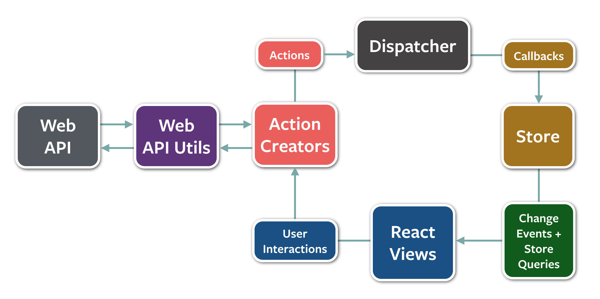

A JavaScript Client Framework
Presented by:
ES6/ES7 (ES2015/2016) Overview
JavaScript that doesn't suck :)
var is dead.
Long live let & const
Constants!
var pi = 3.141592653;
// is now
const pi = 3.141592653;
Block scoping!
// this works. stop the insanity.
for (var i=0; i<10; i++) {
console.log(i);
}
console.log(i);
// this does not work :)
for (let i=0; i<10; i++) {
console.log(i);
}
console.log(i);
Arrow Notation
[1,2,3].map(a => a+1);
Lexical this
function() {
var self = this;
self.name = 'Sean';
setInterval(function() {
console.log(self.name); // ugly :(
});
}
function() {
this.name = 'Sean';
setInterval(() => {
console.log(this.name); // => shares the same this
// with the surrounding code!
});
}
Classes
(finally)
class Person {
constructor(firstName, lastName) {
this.firstName = firstName;
this.lastName = lastName;
}
getFullName() {
return this.firstName + ' ' + this.lastName;
}
}
class Developer extends Person {
// static method called with Developer.curse();
static curse() { return 'thou shalt forever be off by one...'; }
constructor(firstName, lastName, isRemote) {
super(firstName, lastName);
this._isRemote = isRemote;
}
// getter, used via developerInstance.isRemote
get isRemote() { return this._isRemote; }
// setter, used via developerInstance.isRemote = false
set isRemote(newIsRemote) {
throw new Error('Cannot re-assign isRemote!');
}
}
Decorators
@isTestable(true)
class Person {
constructor(firstName, lastName) {
this.firstName = firstName;
this.lastName = lastName;
}
@readonly
getFullName() {
return this.firstName + ' ' + this.lastName;
}
}
Decorators are annotations which allow you to define cross-cutting modifications to classes and methods.
Decorators are executed at runtime.
Built-in classes like Array, Date and DOM Elements can be subclassed!
Modules
Making module syntax a native part of the language!
// lib/math.js
export function sum(x, y) {
return x + y;
}
export var pi = 3.141593;
// app.js
import * as math from "lib/math";
alert("2π = " + math.sum(math.pi, math.pi));
// otherApp.js
import {sum, pi} from "lib/math";
alert("2π = " + sum(pi, pi));
Template strings
/* before, in Person, we had this: */
getFullName() {
return this.firstName + ' ' + this.lastName;
}
/* now we can do this!*/
getFullName() {
return `${this.firstName} ${this.lastName}`;
}
for...of (Iterators)
let a = ['a','b','c'];
for (let i in a) {
console.log(i);
}
// prints 0 1 2 (which is pretty useless)
for (let i of a) {
console.log(prop);
}
// prints a b c :)
You can use the Iterator protocol in your own functions and classes to make anything iterable via for...of
Default, Rest and Spread
function f(x, y=12) {
// y is 12 if not passed (or passed as undefined)
return x + y;
}
f(3) == 15
function f(x, ...y) {
// y is an Array
return x * y.length;
}
f(3, "hello", true) == 6
function f(x, y, z) {
return x + y + z;
}
// Pass each elem of array as argument
f(...[1,2,3]) == 6
Destructuring
let a, b, rest;
[a, b] = [1, 2]
{a, b} = {a:1, b:2}
// a === 1, b === 2
[a, b, ...rest] = [1, 2, 3, 4, 5]
// a === 1, b === 2, rest === [3,4,5]
Destructuring
(multiple return values)
function f() {
return [1,2];
}
[a, b] = f();
Sets and Maps
const s = new Set();
s.add("hello").add("goodbye").add("hello");
s.size === 2;
s.has("hello") === true;
const m = new Map();
m.set("hello", 42);
m.set("goodbye", 34);
m.get("goodbye") == 34;
WeakMaps and WeakSets
const obj = {
// ...
}
const wm = new WeakMap();
wm.set(obj, 42); // store some metadata about obj.
- Keys in a
WeakMapmust be objects WeakMaps do not hold a strong reference to their keys.- Great way to store additional metadata on an object without polluting it.
- WeakSets are similar
Native Promises
const p = new Promise((resolve, reject) => {
setTimeout(() => {
Math.random() < 0.5 ? resolve() : reject();
}, 500);
});
p.then(() => {
console.log('Resolved!');
})
.catch(() => {
console.log('Rejected!');
});
Generators
function *getTime() {
while(true) {
yield Date.now();
}
}
const timer = getTime();
console.log(timer.next()); // { value: 1454906307698, done: false }
console.log(timer.next()); // { value: 1454906307710, done: false }
console.log(timer.next()); // { value: 1454906307711, done: false }
You can also use the for...of loop with Generators :)
Generators
two-way communication
const summer = (function *sum() {
let sum = 0;
while(true) {
sum += yield sum;
}
})();
summer.next(); // start summer by making it yield once
// now we can pump values into it, and receive the current sum
console.log(summer.next(1)); // { value: 1, done: false }
console.log(summer.next(2)); // { value: 3, done: false }
console.log(summer.next(3)); // { value: 6, done: false }
Calling next() on a generator makes it pause execution. When the generator is restarted by another call to next(), the argument passed to next() replaces the yield expression.
Now for the crazy part...
Generatorsas a way to avoid callbacks
Let's say we have some asynchronous function
returning a Promise:
function longRunning(done) {
return new Promise((resolve) => {
setTimeout(() => {
resolve(Math.random());
}, 500);
});
}
Normally, we'd use it like this:
longRunning.then((result) => {
console.log(result);
})
But now we can do something like this...
const script = function *() {
let s = yield longRunning();
console.log(s);
}();
With the assistance of this horrifying statement:
script.next().value.then((r) => {
script.next(r);
});
Treating async code like it's synchronous is awesome!
const script = function *() {
let s = yield longRunning(); // so cool!
console.log(s);
}();
So how do we avoid the horror?
ES2016 async...await
const script = function *() {
let s = yield longRunning();
console.log(s);
}();
script.next().value.then((r) => {
script.next(r);
});
becomes...
(async function script() {
let s = await longRunning(); // even cooler!
console.log(s);
})();
// no ugliness!
Or, more realistically...
(async function script() {
try {
let s = await longRunning(); // sequential async
let t = await anotherLongRunning();
console.log(s + t);
} catch (err) {
console.error(err);
}
})();
Notice that good old-fashioned try-catch blocks work again!
Or, for parallel async
(async function script() {
try {
let [s,t] = await Promise.all(
longRunning(),
anotherLongRunning()
);
console.log(s + t);
} catch (err) {
console.error(err);
}
})();
Almost all of this is available in Node.js natively, right now!
If you're not using it...start. My eyes will thank you.
ES2015/ES2016
Further reading
For more information, the Babel docs are a good reference
As is the Mozilla Developer Network JavaScript reference
- Symbols (new basic type, allowing private class members)
- Proxies
- New Math, Number, String and Object APIs
- Binary and Octal literals
- Reflection API
- Tail recursion
What is it?
Why should you care?
Modern
-
Modern javascriptWrite in ES6, ES7, Typescript... or ES5
-
Modern DOMAutomatically polyfills older browser support
-
Modern Tooling*JSPM, Gulp, Karma, Protractor
* Presenter does not officially endorse JSPM
Components!
- HTMLTemplateElement and ShadowDOM
- Aurelia Component Lifecycle
- Modularity

How can it compete?
Aurelia vs Angular 1.x
Similarities
- Make SPA development easier
- Routing and deep linking
- Data binding
- HTML customization
“Angular Script”
angular.module ...controller
...factory ...service
...provider ...filter
Aurelia: Just classes
| View Model (Controller) |
|
Service (Factory) |
|
| Value Converter (Filter) |
|
“Angular Script” vs ES 2015
angular.module('myApp', [ 'ngRoute' ])
.config(function ($routeProvider) {
$routeProvider
.when('/users', {
templateUrl: 'views/users.html',
controller: 'UsersController',
controllerAs: 'usersController',
resolve: {
users: function(UserService) {
return UserService.getAll();
}
}
})
.otherwise({ redirectTo: '/' });
});
export class App {
configureRouter(config, router) {
config.map([
{ route: ['', 'users'], moduleId: 'users' }
]);
this.router = router;
}
}
Dependency Injection: Angular
angular.module('myApp').controller('UserController',
['users', 'UserService', '$rootScope', 'toastr', '$state',
function (users, UserService, $rootScope, toastr, $state) {
// ...
}]);
Where did the dependencies come from??
users |
Router resolve (data!) |
UserService |
Application factory |
$rootScope |
Angular core |
toastr |
Notification library |
$state |
UI Router (not Angular) |
Dependency Injection: Aurelia
import {inject} from 'aurelia-framework';
import {UserService} from 'users/user-service';
import {EventAggregator} from
'aurelia-event-aggregator';
import * as toastr from 'toastr';
Injection service and dependencies imported.
import {inject} from 'aurelia-framework';
import {UserService} from 'users/user-service';
import {EventAggregator} from
'aurelia-event-aggregator';
import * as toastr from 'toastr';
@inject(UserService, EventAggregator, toastr)
export class Users {
}
Injection service and dependencies imported.
Injection via decorator.
import {inject} from 'aurelia-framework';
import {UserService} from 'users/user-service';
import {EventAggregator} from
'aurelia-event-aggregator';
import * as toastr from 'toastr';
@inject(UserService, EventAggregator, toastr)
export class Users {
constructor(userService, eventAggregator, toastr) {
this.userService = userService;
this.eventAggregator = eventAggregator;
this.toastr = toastr;
}
}
Injection service and dependencies imported.
Injection via decorator.
Deps injected as constructor args.
import {inject} from 'aurelia-framework';
import {UserService} from 'users/user-service';
import {EventAggregator} from
'aurelia-event-aggregator';
import * as toastr from 'toastr';
@inject(UserService, EventAggregator, toastr)
export class Users {
constructor(userService, eventAggregator, toastr) {
this.userService = userService;
this.eventAggregator = eventAggregator;
this.toastr = toastr;
}
activate(params) {
return this.userService.getAll()
.then( users => this.users = users );
}
}
Injection service and dependencies imported.
Injection via decorator.
Deps injected as constructor args.
Lifecycle activate method invoked with view state. Screen Activation Lifecycle
Data Binding
Append .bind to any html or custom attribute. |
Uses Angular-specific custom attributes. |
| Defaults to two-way for input, one-way for everything else. | Two-way all the time, except for custom directives. |
Want more control? .one-way, .two-way, .one-time. |
Each binding adds a watcher on the $scope model. |
| Adaptive Binding picks optimal observation strategy & minimizes dirty checking. | Built in directives trigger digest cycle on scope model changes (dirty checking). |
Data Binding Examples
|
|
|
|
|
|
|
|
HMTL Customization
|
|
Usage looks similar, devil is in the implementation details...
Angular Directive
angular.module('myApp').directive('myDatepicker',
function () {
return {
templateUrl: 'views/mydatepicker.html',
restrict: 'E',
scope: { data: '=' },
controller: function($scope, $element) {
// Directive-specific logic
},
link: function postLink(scope, element) {
// DOM manipulation here
}
};
});
Configure template.
restrict specifies 'E' or 'A' for element or attribute.
Isolate scope, o.w. can access parent!
'=' indicates two-way data binding, '@' for one way, '&' for binding functions.
Controller function runs first, then Link function.
Directive: Datepicker
link: function(scope, element) {
// Initialize datepicker
element.find('.date').datepicker();
// Try to update data binding?
element.find('.date').datepicker().on('changeDate',
function(e) {
scope.data = e.date;
}
);
}
Element will not update because event happened outside of Angular’s context.
link: function(scope, element) {
// Initialize datepicker
element.datepicker();
// Update data binding
element.datepicker().on('changeDate',
function(e) {
scope.$apply(function () {
scope.data = e.date;
});
});
}
Run update inside scope.$apply to trigger a digest cycle.
Directive: Watch
link: function(scope, element) {
// ...
scope.$watch('data',
function(newVal) {
element.datepicker('setDate', newVal);
});
}
To have datepicker respond to model changes, must add scope.$watch to add to list of watchers evaluated in digest cycle.
Aurelia Custom Element
import {inject, bindable} from 'aurelia-framework';
import 'bootstrap-datepicker/js/bootstrap-datepicker';
@inject(Element)
export class MyDatepickerCustomElement {
@bindable data;
constructor(element) { this.element = element; }
bind() { // DOM manipulation... }
unbind() { // Cleanup... }
}
External libraries are imported.
Naming convention marks this as custom element.
Bindable decorator for data binding.
View template loaded by convention
bind and unbind are Component Lifecycle methods.
Custom Element: Datepicker
bind() {
// Find input element
this.selector = $(this.element).find('.date');
// Initialize datepicker
this.selector.datepicker();
// Update when user picks a date
this.selector.datepicker().on('changeDate', (e) => {
this.data = e.date;
});
}
Changing data in datepicker event just works.
No internal framework knowledge required.
Custom Element: Update
export class DatePicker {
@bindable data;
...
dataChanged(newVal, oldVal) {
this.selector.datepicker('setDate', this.data);
}
}
xxxChanged method called for changes to bindable properties.
this.data automatically populated with newVal. Full example
Angular Inheritance
Components can access their parent via $scope.
Prevents re-use and leads to hard to track down bugs due to prototypal inheritance.
See the Pen Angular Demo Parent Child Madness by Daniela Baron (@danielabar) on CodePen.
Aurelia Inheritance
By default, components can not access their parent.
Can be configured if needed:
export class ChildViewModel {
bind(bindingContext) {
this.$parent = bindingContext;
}
}
Even better, use EventAggregator or PropertyObserver for component communication.
Summary
| Conventions | Configuration |
| Web standards | “The Angular Way” |
| Simple DOM manipulation | Directives are difficult |
| Data binding just works | Leaky abstractions |
| View and Component lifecycle | Kind of, but unclear |
Aurelia vs React
JSX
var WelcomeBox = React.createClass({
render: function() {
return (
Hello, {this.props.username}!
);
}
});
ReactDOM.render(
Flux: Unidirectional Data Flow
Redux: Three Principles
- Single source of truth
- State is read-only
- Changes are made with pure functions
Data Flow in Aurelia: Some Thoughts
- One-way binding apart from input elements
- State is updated by calling methods on services
- Changes flow down via observers
Aurelia vs Ember
The Ember Way
Router
different...
Gotchas
It's new...
- Still in beta → moving target
- Documentation is a work in progress
- Not a lot of Q & A on Stack Overflow
- JSPM is new and quirky (recommended package manager and module loader)
- Bundling and optimization still needs work